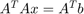
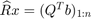
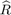

Contents
AMSC 460 - HW16
clear all; format compact; close all; syms f(x) x y z
Problem 1
(a) Using MATLAB's backslash command, find the solution to the normal equations .
A = [1+10^(-8) -1;-1 1;1 -1] b = [2;1;-1]
A =
1.0000 -1.0000
-1.0000 1.0000
1.0000 -1.0000
b =
2
1
-1
AT = A.'; B = AT*A; C = AT*b; x1 = B\C
Warning: Matrix is close to singular or badly scaled. Results may be
inaccurate. RCOND = 2.896879e-17.
x1 =
1.0e+07 *
5.7533
5.7533
(b)Using MATLAB's \texttt{qr} command and backslash, find the solution to the triangular system . Compare this to the solution to the normal equations. How far apart are the answers? Compute the distance in a norm of your choice.
[Q,R] = qr(A)
Q =
-0.5774 -0.8165 -0.0000
0.5774 -0.4082 0.7071
-0.5774 0.4082 0.7071
R =
-1.7321 1.7321
0 -0.0000
0 0
Qt = Q.' D = Qt*b x2 = R\D distance = abs(x1-x2) norm(x1-x2)
Qt =
-0.5774 0.5774 -0.5774
-0.8165 -0.4082 0.4082
-0.0000 0.7071 0.7071
D =
-0.0000
-2.4495
-0.0000
x2 =
1.0e+08 *
3.0000
3.0000
distance =
1.0e+08 *
2.4247
2.4247
ans =
3.4290e+08
(c)Using MATLAB's \texttt{cond} command, what are the condition numbers of , , and ? Which condition number should we worry about in double precision floating point arithmetic? Which computed answer is more accurate?
cond(A) cond(B) cond(R) % Since all of the items are much larger than 1 so both moethods are bad % Therefore the QR decomposition is more accurate
ans = 4.2426e+08 ans = 1.7998e+16 ans = 4.2426e+08